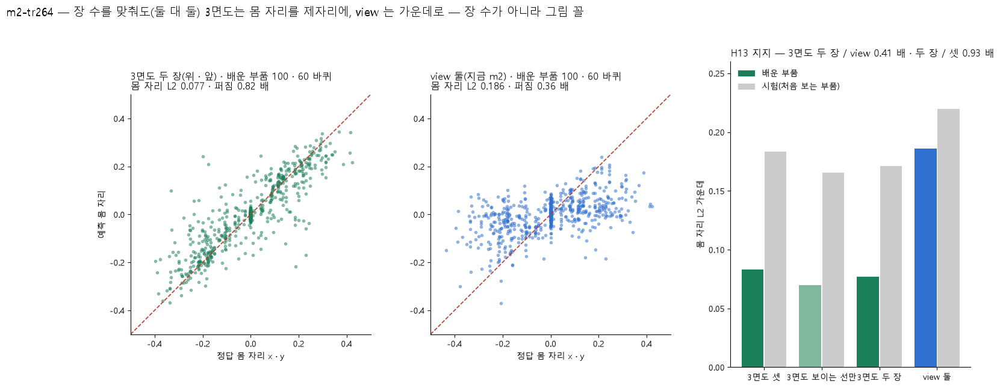

실험 m2_tr0264_h013_3면도둘
목표 G1.2 view 모음 → 파츠별 CAD code(CadQuery · 그 전 「3 면도 → 파츠별 CAD」 · 지금 M2 는 위 · 앞 · 옆 고정 세 장만 받음 → 아무 각도 N 장으로 바꿀 것 · 11-20) · G1 첫 제품 — 피규어 · 메카 사진 여러 장 + 치수 → 숨은선 3 면도 + 파츠별 CAD · G0 임의의 이미지 → CAD 코드 · 빌린 가정 4: 생성기기하 · 정답3D · 시점앎 · 정사영 · 갚는 계획: 입력 꼴을 고르는 진단 — m2-tr263 과 같음 · 목표 시험지 값: 안 잼 (!)
그림 장 수를 맞추면(3면도 두 장 대 view 두 장), 3면도 꼴이 여전히 view 보다 몸 자리를 훨씬 잘 배우나?
판정 · H13 지지(3면도 두 장 / view 둘 0.41 배 · 두 장 / 셋 0.93 배) — 장 수가 아니라 축에 맞춘 그림 꼴이 m2 의 몸 자리를 배우게 함 · m2-tr263 H11 의 장 수 섞임을 풂 · 처음 보는 부품은 모든 꼴에서 약함(0.17 ~ 0.22) — 넓히는 힘은 데이터 양 · 다음은 사용자 결정: m2 앞에 축에 맞춘 꼴로 펴는 단계를 둘지 · 비스듬한 view 그대로 받고 몰림을 구조로 막을지
| 가설 | 주장 | 결과 | 근거 |
|---|---|---|---|
| H13 | 몸 자리를 배우기 쉬운 것은 장 수가 아니라 축에 맞춘 그림 꼴이다 — 3면도 두 장도 view 둘보다 훨씬 정확하다 | 지지 | 3면도 두 장 0.077 · view 0.186 · 좌표별 0.023 · 0.022 · 0.022 대 0.092 · 0.053 · 0.027 · 퍼짐 0.82 대 0.36 · 두 장 / 셋 0.926 [0.832, 1.119] · 시험 두 장 / view 0.78 [0.71, 0.94](0.171 대 0.220) · 끝 손실 2.47(셋 2.51 · view 3.01) |
분석
한 줄로
물음: m2-tr263 의 「3면도가 view 보다 몸 자리를 잘 배운다」 는 3면도가 그림 셋이라서인가?
답: 아니다(H13 지지). 옆 그림을 빼고 위 · 앞 두 장만 줘도 몸 자리 오차가 view 둘의 0.41 배로, 3면도 셋과 같다(0.93 배). 장 수가 아니라 축에 맞춘 그림 꼴이 m2 가 몸 자리를 배우게 한다. 처음 보는 부품은 여전히 모든 꼴에서 약하다.
왜 이 실험을 했나
m2-tr263 에서 같은 부품 · 같은 학습으로도 3면도가 view 보다 몸 자리 오차가 0.45 배였지만, 3면도는 그림 셋 · view 는 둘이라 장 수가 섞여 있었다. m2 입력 꼴을 정하기 전에 이 섞임을 풀었다.
바꾼 것 하나
3면도 갈래의 옆 그림을 빈 그림으로 바꿨다(위 · 앞 두 장). 망 · 부품 11,968 · 처음부터 · 학습률 3e-4 · 60 바퀴 · 씨앗은 m2-tr263 과 같다.
결과

| 60 바퀴 | 3면도 셋 | 3면도 두 장 | view 둘 |
|---|---|---|---|
| 배운 부품 몸 자리 오차 | 0.083 | 0.077 | 0.186 |
| 퍼짐(예측 몸끼리 거리 / 정답) | 0.87 배 | 0.82 배 | 0.36 배 |
| 시험 몸 자리 오차 | 0.183 | 0.171 | 0.220 |
| 가설 | 결과 | 판정선 | 판정 |
|---|---|---|---|
| H13 3면도 두 장 / view 둘(배운 부품) | 0.41 [0.36, 0.49] | ≤ 0.6 지지 · ≥ 0.9 기각 | 지지 |
왜 이렇게 나왔나
확인한 것
- 위 · 앞 두 장에는 x · y · z 세 좌표가 모두 들어 있다(위 = x · y, 앞 = x · z). 옆이 없어도 좌표별 오차가 0.023 · 0.022 · 0.022 로 고르다.
- view 둘도 세 좌표를 다 담지만 x · y 오차가 0.092 · 0.053 으로 크고, 예측이 가운데로 몰린다(퍼짐 0.36 배).
- 처음 보는 부품은 3면도 두 장도 0.17 로, view(0.22)보다 조금 나을 뿐이다.
짐작 (아직 확인 안 함)
- 축에 맞춘 그림에서는 몸의 좌표가 그림의 화소 좌표와 그대로 맞는다. 망은 「이 몸이 그림 어디에 있나」 만 읽으면 된다. 비스듬한 그림에서는 몸끼리 겹쳐 보이고 좌표가 섞여, 확실하지 않을 때 가운데로 숨는다.
한계
- 한 번 · 60 바퀴 · 처음부터 · 생성기 부품.
- 빈 옆 그림은 망의 옆 칸에 「아무것도 없음」 을 준다 — 망 구조는 그대로라 진짜 두 장 망과는 조금 다르다.
배운 것과 다음
m2 가 몸 자리를 배우게 하는 것은 장 수가 아니라 축에 맞춘 그림 꼴이다. 처음 보는 부품까지 넓히는 것은 따로 풀어야 한다(데이터 양).
- 사용자 결정: m2 앞에 「view 를 축에 맞춘 꼴로 펴는」 단계를 둘지, 비스듬한 view 를 그대로 받고 몰림을 구조로 막을지.
- 어느 쪽이든 처음 보는 부품을 위해 부품 수를 늘린다(생성기 11 만).
실험 기록
- 카드 · 둘264.py(흐름 · 재기 · 그림) · 같은양263.py(갈래 3면도둘 · 학습) · 잼.json · 흐름.png · 결과.png · 원본 out/설명/캐드부품/모델263/3면도둘(머리_020 · 040 · 060 · 곡선)